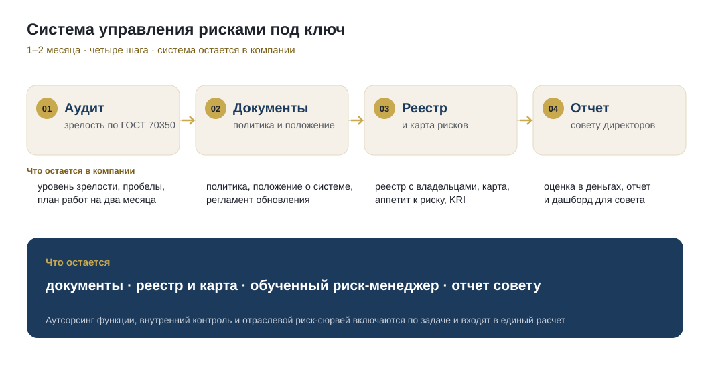

ERMP для риск-менеджеров и тех, кто отвечает за систему. Для компаний корпоративная программа, система управления рисками под ключ и дашборд рисков. За всем этим двадцать лет в риск-функциях промышленности и банков и шесть национальных стандартов в соавторстве.
Одна программа в трех форматах: онлайн в своем темпе, очная группа в декабре и корпоративный поток для команды на процессах компании. Сертификат ERMP одинаковый во всех трех.
Как поставить в компании работающую систему управления рисками: от политики, которую утверждает совет директоров, до реестра, карты, аппетита к риску, индикаторов и отчета, который можно предъявить совету и аудитору. Шесть модулей собраны по тем вопросам, которые риск-менеджеры задают чаще всего.
То, что мы приносим компании: систему управления рисками, которая остается после нас, и живую картину рисков для руководства. Цена по объему работ, расчет за два рабочих дня.

Начинаем с аудита зрелости по ГОСТ Р 70350 и за один-два месяца доводим до работающей системы: политика и положение, реестр с владельцами, карта и аппетит к риску, индикаторы, отчет совету директоров. Аутсорсинг функции, внутренний контроль и отраслевой риск-сюрвей включаются по задаче и входят в единый расчет.
Подробнее и запросить расчет →
Одна картина рисков для управляющего комитета или совета: индекс, тепловая карта, владельцы и сроки, индикаторы раннего предупреждения, динамика к прошлому периоду. Две редакции, риски проекта и риски компании. Разворачивается в вашем контуре за две недели, уже работает у клиента в капитальном строительстве.
Подробнее о дашборде →Четыре отрасли, в которых мы работали руками и по которым приходят запросы. Редакция меняет примеры, реестр и карту, методология одна.
национальных стандартов по менеджменту риска написаны при нашем участии
ГОСТ Р ИСО 31000, 58771, 70350, 71034 и другиев риск-функциях промышленных холдингов и банков, а затем в консалтинге
Норникель, Сибур, банки, капстройот реестра в таблице до дашборда на управляющем комитете
Внедрение у клиента в капитальном строительстве, 2026материалов методологии открыты: реестр, карта, аппетит, зрелость, отчетность
Библиотека risk-place.ru, пополняется каждую неделюДиагностика показывает уровень зрелости системы сегодня. Шаблоны дают сделать реестр, карту и матрицу своими руками.
Тринадцать вопросов по пяти уровням ГОСТ Р 70350, мгновенный результат: уровень зрелости, три главных пробела и следующий шаг.
Книга Excel с реестром рисков, матрицей вероятность-влияние и шаблоном карты, плюс инструкция на две страницы.
Все, чему мы учим и что внедряем у клиентов, опубликовано здесь. Методы оценки, структуры документов, требования стандартов и разборы реальных ситуаций — без регистрации и без оплаты.
Практика с двадцатью годами в риск-функциях крупных организаций, промышленность и банк. Программы написаны по тому, что работало и что ломалось в реальных системах управления рисками.


Сертификат ERMP это вход в закрытое сообщество сертифицированных практиков по рискам и непрерывности: ежеквартальные сессии, каталог членов, назначение на реальные проекты компаний. Сообщество одно на два сертификата, ERGP по непрерывности и ERMP по рискам.
У каждого сертификата номер, работодатель проверяет его по открытому реестру за десять секунд.
Проверить сертификат →Выберите, что вас интересует, — ответим в течение рабочего дня и предложим следующий шаг.